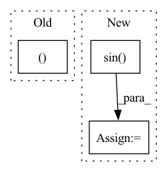

Pattern ID :40343
Before Change
h = torch.empty(
(*(c.shape[:-1]), self.impulse_response_length), device=c.device
)
h[..., 0 ] = torch.exp(c0)
for n in range(1, self.impulse_response_length):
s = n - self.cep_order
h[..., n] = (h[..., max(0, s) : n].clone() * c1[..., max(0, -s) :]).sum(After Change
// Compute complex exponential.
r = torch.exp(C.real)
real = r * torch.cos(C.imag)
imag = r * torch.sin( C.imag)
S = torch.complex(real, imag)
h = torch.fft.ifft(S)[..., : self.impulse_response_length].real
return h
In pattern: SUPERPATTERN
Frequency: 3
Non-data size: 3
Instances Fragment ID: 114518643
Project Name: sp-nitech/diffsptk
Commit Name: 1c77c36a6f6e960dbd32e24b0d2d3d0296c0e5ea
Time: 2022-07-19
Author: takenori.yoshimura24@gmail.com
File Name: diffsptk/core/c2mpir.py
M Class Name: CepstrumToMinimumPhaseImpulseResponse
N Class Name: CepstrumToMinimumPhaseImpulseResponse
M Method Name: forward(2)
N Method Name: forward(2)
M Parent Class: nn.Module
N Parent Class: nn.Module
M File Name: diffsptk/core/c2mpir.py
N File Name: diffsptk/core/c2mpir.py
M Start Line: 72
M End Line: 84
N Start Line: 75
N End Line: 81
Before Change
self.assertTrue(
torch.equal(
total_rew[dones].sum(-1).to(torch.long),
torch.full((dones.sum()After Change
agent_dist_to_target = 0.5
angle = self.env.steps * angular_v_rad_per_step + agent_phase_shift
desired_pos = (
torch.stack([torch.cos(angle), torch.sin( angle) ], dim=1)
* agent_dist_to_target
)
delta_pos = desired_pos - obs[i][:, :2]
action = torch.clamp(
delta_pos * 2,
min=-self.env.agents[i].u_range,
max=self.env.agents[i].u_range, Fragment ID: 114518651
Project Name: proroklab/vectorizedmultiagentsimulator
Commit Name: 92c9eee35eb9bce74fd3046ea1168aa2cbdcf77a
Time: 2022-07-05
Author: jb2270@cam.ac.uk
File Name: tests/test_scenarios/test_flocking.py
M Class Name: TestDispersion
N Class Name: TestDispersion
M Method Name: test_heuristic(1)
N Method Name: test_heuristic(1)
M Parent Class: unittest.TestCase
N Parent Class: unittest.TestCase
M File Name: tests/test_scenarios/test_flocking.py
N File Name: tests/test_scenarios/test_flocking.py
M Start Line: 29
M End Line: 53
N Start Line: 30
N End Line: 61
Before Change
sparsity = np.ceil(sparsity * p).astype("int")
weights[np.random.choice(np.arange(p), p - sparsity, replace=False)] = 0
gaussian_x = np.random.normal(0, eps, (n, p ))
view = np.outer(z, weights)
view += gaussian_x
views.append(view)After Change
random_state = check_random_state(random_state)
z = random_state.randn(n)
if transform:
z = np.sin( z)
views = []
true_features = []
view_sparsity = _process_parameter("view_sparsity", view_sparsity, 1, len(view_features))
for p, sparsity in zip(view_features, view_sparsity): Fragment ID: 114518635
Project Name: jameschapman19/cca_zoo
Commit Name: db5bebc310d1df261e52ec6500124beeb3729f93
Time: 2021-07-01
Author: james.chapman.19@ucl.ac.uk
File Name: cca_zoo/data/simulated.py
M Class Name: AnonimousClass
N Class Name: AnonimousClass
M Method Name: generate_simple_data(6)
N Method Name: generate_simple_data(4)
M Parent Class:
N Parent Class:
M File Name: cca_zoo/data/simulated.py
N File Name: cca_zoo/data/simulated.py
M Start Line: 121
M End Line: 131
N Start Line: 109
N End Line: 136